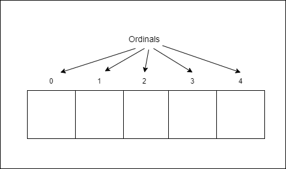
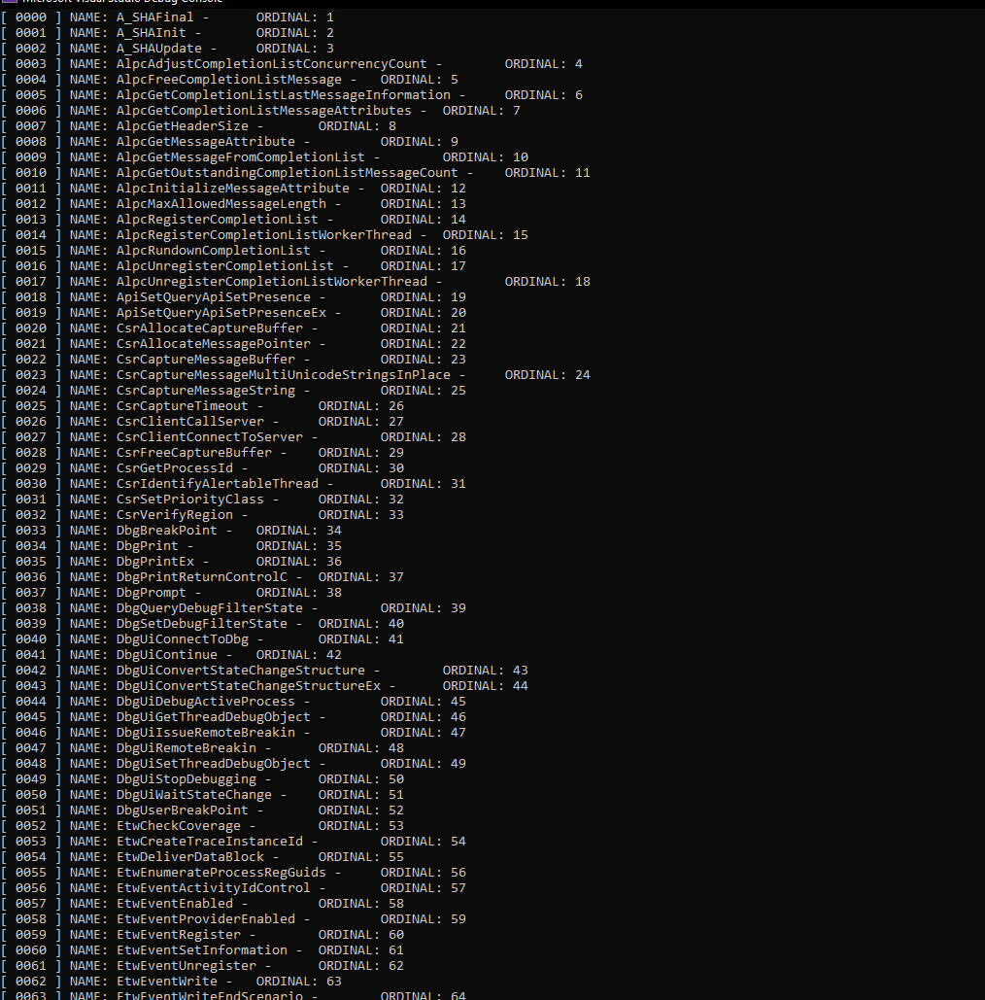
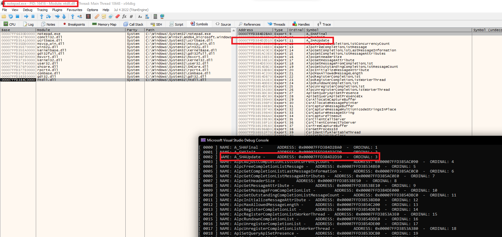
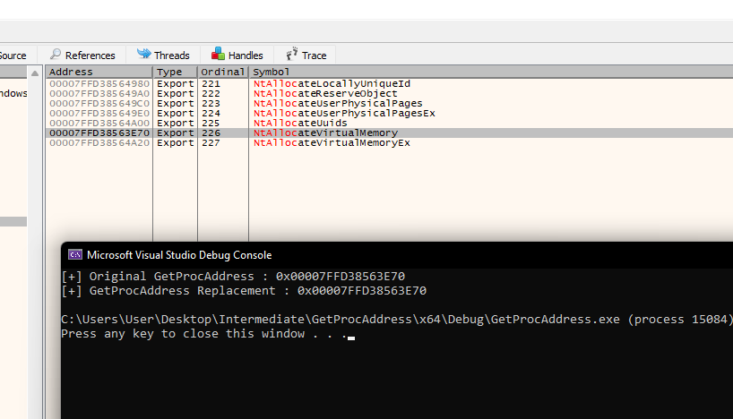

Introduction
The GetProcAddress WinAPI retrieves the address of an exported function from a specified module handle. The function returns NULL if the function name is not found in the specified module handle.
In this module, a function that replaces GetProcAddress will be implemented. The new function's prototype is shown below.
FARPROC GetProcAddressReplacement(IN HMODULE hModule, IN LPCSTR lpApiName) {}How GetProcAddress Works
The first point that must be addressed is how a function's address is found and retrieved by the GetProcAddress WinAPI.
The hModule parameter is the base address of the loaded DLL. This is the address where the DLL module is found in the address space of the process. With that in mind, retrieving a function's address is found by looping through the exported functions inside the provided DLL and checking if the target function's name exists. If there's a valid match, retrieve the address.
To access the exported functions, it's necessary to access the DLL's export table and loop through it in search of the target function name.
Recall - Export Table Structure
Recall the Parsing PE Headers module, it was mentioned that the export table is a structure defined as IMAGE_EXPORT_DIRECTORY.
typedef struct _IMAGE_EXPORT_DIRECTORY {
DWORD Characteristics;
DWORD TimeDateStamp;
WORD MajorVersion;
WORD MinorVersion;
DWORD Name;
DWORD Base;
DWORD NumberOfFunctions;
DWORD NumberOfNames;
DWORD AddressOfFunctions; // RVA from base of image
DWORD AddressOfNames; // RVA from base of image
DWORD AddressOfNameOrdinals; // RVA from base of image
} IMAGE_EXPORT_DIRECTORY, *PIMAGE_EXPORT_DIRECTORY;The relevant members of this structure for this module are the last three.
AddressOfFunctions - Specifies the address of an array of addresses of the exported functions.AddressOfNames - Specifies the address of an array of addresses of the names of the exported functions.AddressOfNameOrdinals - Specifies the address of an array of ordinal numbers for the exported functions.Recall - Accessing the Export Table
Let's recall how to retrieve the export directory, IMAGE_EXPORT_DIRECTORY. The code snippet below should be familiar since it was explained in the Parsing PE Headers module.
The pBase variable at the beginning of the function is the only new addition in the code snippet. This variable is created to avoid type-casting later on when converting relative virtual addresses (RVAs) to virtual addresses (VAs). The Visual Studio compiler will throw an error when adding a PVOID data type to a value, and therefore hModule was casted to PBYTE instead.
FARPROC GetProcAddressReplacement(IN HMODULE hModule, IN LPCSTR lpApiName) {
// We do this to avoid casting each time we use 'hModule'
PBYTE pBase = (PBYTE) hModule;
// Getting the DOS header and performing a signature check
PIMAGE_DOS_HEADER pImgDosHdr = (PIMAGE_DOS_HEADER)pBase;
if (pImgDosHdr->e_magic != IMAGE_DOS_SIGNATURE)
return NULL;
// Getting the NT headers and performing a signature check
PIMAGE_NT_HEADERS pImgNtHdrs = (PIMAGE_NT_HEADERS)(pBase + pImgDosHdr->e_lfanew);
if (pImgNtHdrs->Signature != IMAGE_NT_SIGNATURE)
return NULL;
// Getting the optional header
IMAGE_OPTIONAL_HEADER ImgOptHdr = pImgNtHdrs->OptionalHeader;
// Getting the image export table
// This is the export directory
PIMAGE_EXPORT_DIRECTORY pImgExportDir = (PIMAGE_EXPORT_DIRECTORY) (pBase + ImgOptHdr.DataDirectory[IMAGE_DIRECTORY_ENTRY_EXPORT].VirtualAddress);
// ...
}Accessing Exported Functions
After obtaining a pointer to the IMAGE_EXPORT_DIRECTORY structure, it's possible to loop through the exported functions. The NumberOfFunctions member specifies the number of functions exported by hModule. As a result, the maximum iterations of the loop should be equivalent to NumberOfFunctions.
for (DWORD i = 0; i < pImgExportDir->NumberOfFunctions; i++){
// Searching for the target exported function
}Building The Search Logic
The next step is to build the search logic for the functions. The building of the search logic requires the use of AddressOfFunctions, AddressOfNames, and AddressOfNameOrdinals, which are all arrays containing RVAs referencing a single unique function in the export table.
typedef struct _IMAGE_EXPORT_DIRECTORY {
// ...
// ...
DWORD AddressOfFunctions; // RVA from base of image
DWORD AddressOfNames; // RVA from base of image
DWORD AddressOfNameOrdinals; // RVA from base of image
} IMAGE_EXPORT_DIRECTORY, *PIMAGE_EXPORT_DIRECTORY;Since these elements are RVAs, the base address of the module, pBase, must be added to get the VA. The first two code snippets should be straightforward. They retrieve the function's name and the function's address, respectively. The third snippet retrieves the function's ordinal, which is explained in detail in the next section.
// Getting the function's names array pointer
PDWORD FunctionNameArray = (PDWORD)(pBase + pImgExportDir->AddressOfNames);
// Getting the function's addresses array pointer
PDWORD FunctionAddressArray = (PDWORD)(pBase + pImgExportDir->AddressOfFunctions);
// Getting the function's ordinal array pointer
PWORD FunctionOrdinalArray = (PWORD)(pBase + pImgExportDir->AddressOfNameOrdinals);Understanding Ordinals
An ordinal of a function is an integer value that represents the position of the function within an exported function table in the DLL. The export table is organized as a list (array) of function pointers, with each function being assigned an ordinal value based on its position in the table.

It's important to note that the ordinal value is used to identify a function's address rather than its name. The export table operates this way to handle cases where the function name is not available or is not unique. In addition to that, fetching a function's address using its ordinal is faster than using its name. For this reason, the operating system uses the ordinal to retrieve a function's address.
For example, VirtualAlloc's address is equal to FunctionAddressArray[ordinal of VirtualAlloc], where FunctionAddressArray is the function's addresses array pointer fetched from the export table.
With this in mind, the following code snippet will print the ordinal value of each function in the function array of a specified module.
// Getting the function's names array pointer
PDWORD FunctionNameArray = (PDWORD)(pBase + pImgExportDir->AddressOfNames);
// Getting the function's addresses array pointer
PDWORD FunctionAddressArray = (PDWORD)(pBase + pImgExportDir->AddressOfFunctions);
// Getting the function's ordinal array pointer
PWORD FunctionOrdinalArray = (PWORD)(pBase + pImgExportDir->AddressOfNameOrdinals);
// Looping through all the exported functions
for (DWORD i = 0; i < pImgExportDir->NumberOfFunctions; i++){
// Getting the name of the function
CHAR* pFunctionName = (CHAR*)(pBase + FunctionNameArray[i]);
// Getting the ordinal of the function
WORD wFunctionOrdinal = FunctionOrdinalArray[i];
// Printing
printf("[ %0.4d ] NAME: %s -\t ORDINAL: %d\n", i, pFunctionName, wFunctionOrdinal);
}GetProcAddressReplacement Partial Demo
Although GetProcAddressReplacement is not complete yet, it should now output the function names and their associated ordinal numbers. To test out what's been built so far, call the function with the following parameters:
GetProcAddressReplacement(GetModuleHandleA("ntdll.dll"), NULL);As expected, the function name and the function's ordinal are printed to the console.

Ordinal To Address
With the function's ordinal value, it's possible to get the function's address.
// Getting the function's names array pointer
PDWORD FunctionNameArray = (PDWORD)(pBase + pImgExportDir->AddressOfNames);
// Getting the function's addresses array pointer
PDWORD FunctionAddressArray = (PDWORD)(pBase + pImgExportDir->AddressOfFunctions);
// Getting the function's ordinal array pointer
PWORD FunctionOrdinalArray = (PWORD)(pBase + pImgExportDir->AddressOfNameOrdinals);
// Looping through all the exported functions
for (DWORD i = 0; i < pImgExportDir->NumberOfFunctions; i++){
// Getting the name of the function
CHAR* pFunctionName = (CHAR*)(pBase + FunctionNameArray[i]);
// Getting the ordinal of the function
WORD wFunctionOrdinal = FunctionOrdinalArray[i];
// Getting the address of the function through it's ordinal
PVOID pFunctionAddress = (PVOID)(pBase + FunctionAddressArray[wFunctionOrdinal]);
printf("[ %0.4d ] NAME: %s -\t ADDRESS: 0x%p -\t ORDINAL: %d\n", i, pFunctionName, pFunctionAddress, wFunctionOrdinal);
}To verify the functionality, open notepad.exe using xdbg and check the exports of ntdll.dll.

The image above shows the address of A_SHAUpdate being 0x00007FFD384D2D10 in both xdbg and using the GetProcAddressReplacement function. Although notice that the ordinals are different for the function due to the Windows Loader generating a new array of ordinals for every process.
GetProcAddressReplacement Code
The last bit of code needed for the function to be complete is a way to compare the exported function names to the target function name, lpApiName. This is easily done using strcmp. Then finally, return the function address when there is a match.
FARPROC GetProcAddressReplacement(IN HMODULE hModule, IN LPCSTR lpApiName) {
// We do this to avoid casting at each time we use 'hModule'
PBYTE pBase = (PBYTE)hModule;
// Getting the dos header and doing a signature check
PIMAGE_DOS_HEADER pImgDosHdr = (PIMAGE_DOS_HEADER)pBase;
if (pImgDosHdr->e_magic != IMAGE_DOS_SIGNATURE)
return NULL;
// Getting the nt headers and doing a signature check
PIMAGE_NT_HEADERS pImgNtHdrs = (PIMAGE_NT_HEADERS)(pBase + pImgDosHdr->e_lfanew);
if (pImgNtHdrs->Signature != IMAGE_NT_SIGNATURE)
return NULL;
// Getting the optional header
IMAGE_OPTIONAL_HEADER ImgOptHdr = pImgNtHdrs->OptionalHeader;
// Getting the image export table
PIMAGE_EXPORT_DIRECTORY pImgExportDir = (PIMAGE_EXPORT_DIRECTORY) (pBase + ImgOptHdr.DataDirectory[IMAGE_DIRECTORY_ENTRY_EXPORT].VirtualAddress);
// Getting the function's names array pointer
PDWORD FunctionNameArray = (PDWORD)(pBase + pImgExportDir->AddressOfNames);
// Getting the function's addresses array pointer
PDWORD FunctionAddressArray = (PDWORD)(pBase + pImgExportDir->AddressOfFunctions);
// Getting the function's ordinal array pointer
PWORD FunctionOrdinalArray = (PWORD)(pBase + pImgExportDir->AddressOfNameOrdinals);
// Looping through all the exported functions
for (DWORD i = 0; i < pImgExportDir->NumberOfFunctions; i++){
// Getting the name of the function
CHAR* pFunctionName = (CHAR*)(pBase + FunctionNameArray[i]);
// Getting the address of the function through its ordinal
PVOID pFunctionAddress = (PVOID)(pBase + FunctionAddressArray[FunctionOrdinalArray[i]]);
// Searching for the function specified
if (strcmp(lpApiName, pFunctionName) == 0){
printf("[ %0.4d ] FOUND API -\t NAME: %s -\t ADDRESS: 0x%p -\t ORDINAL: %d\n", i, pFunctionName, pFunctionAddress, FunctionOrdinalArray[i]);
return pFunctionAddress;
}
}
return NULL;
}GetProcAddressReplacement Final Demo
The image below shows the output of both GetProcAddress and GetProcAddressReplacement searching for the address of NtAllocateVirtualMemory. As expected, both have resulted in the correct function address and therefore a custom implementation of GetProcAddress was successfully built.
